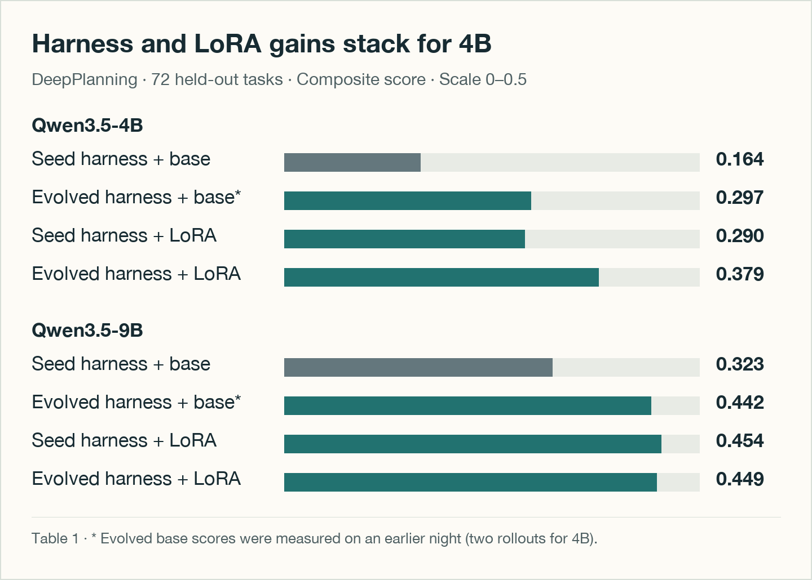
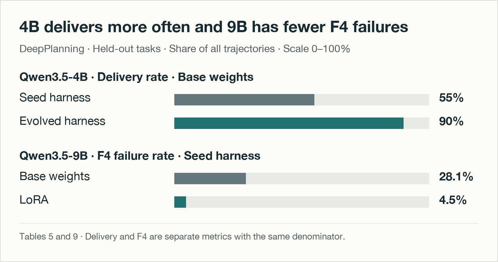
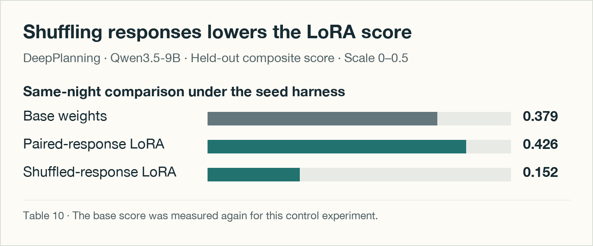
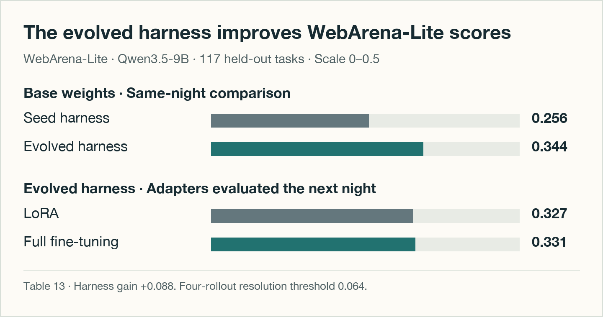

A travel-planning agent can lose points by querying the same hotel until it runs out of steps, or by submitting an itinerary that exceeds the budget. Both runs drag down the benchmark score. The first gives you a reason to inspect the harness, the prompts, tools, and runtime controls around the model. The second gives you a reason to inspect the quality of the plans the model can produce. Tian and colleagues test those interventions on the same tasks and use the run logs to see which failures disappear. Paper, §3
The result worth replicating is the different response of the two models. On Qwen3.5-4B, improving the harness and adding LoRA yield the highest score when combined. On Qwen3.5-9B, LoRA under the original harness already reaches the level of the evolved harness, and the difference from combining them falls within the paper’s measurement noise.
Four configurations on the same tasks
On DeepPlanning, a benchmark for multi-day travel planning, the authors keep the official tools and scorer and split 120 tasks into 48 development tasks and 72 held-out tasks. During harness evolution they freeze the model. A proposer suggests two edits per round to prompts, policies, middleware, or tools. Both candidates are tested on the development set, and the retained configuration is measured again to establish a fresh baseline. The authors then train LoRA adapters on high-scoring development trajectories collected with the evolved harness, applying the loss to assistant outputs. Paper, §4
For 4B, the held-out composite score rises from 0.164 to 0.379 with both changes. Adding LoRA to the evolved harness accounts for a +0.082 difference. For 9B, the evolved harness alone scores 0.442, LoRA alone scores 0.454, and the combination scores 0.449. Those three 9B scores are closer together than the paper’s 0.035 threshold for distinguishing four-rollout means. The evolved-harness baseline for 4B comes from two rollouts on an earlier night, so the paper uses 0.050 for comparisons involving that point.


Which failures became less frequent?
DeepPlanning assigns zero to runs that fail to deliver a parseable plan, so composite score = delivery rate × average score among delivered plans. The authors label a trajectory healthy if its plan scores at least 0.5. For the rest, the first signal that fires determines the label: F1 for an evidence problem, F2 for harness friction, or F3 for an execution-control problem such as looping. F4 is the remaining category, usually a low-scoring plan submitted without those earlier signals. The order matters when comparing category shares. Paper, §3.1–3.2


For 4B, evolving the harness raises held-out delivery from 55% to 90%. On held-out tasks where both harnesses delivered a plan, the paired score difference was only +0.022. The overall increase in average delivered-plan quality therefore needs to be read alongside the change in which tasks were completed. For 9B, LoRA under the seed harness cuts F4 from 28.1% to 4.5% while delivery moves from 97% to 96%. That pattern supports a change in what the model submits under the same harness. Paper, §5.1 · Appendix Table 9
The shuffled-response control
In a separate same-night 9B experiment, the authors keep the inputs and training steps fixed and shuffle assistant outputs across samples. LoRA trained with correctly paired responses scores 0.426 on the held-out tasks. The shuffled adapter scores 0.152, and the base model scores 0.379. The comparison makes the pairing of inputs and responses part of what a replication needs to preserve. It also gives a concrete negative control for the 9B setup.


What transferred to web navigation
On WebArena-Lite, one important edit keeps the two most recent full pages in context, up from one. On 117 held-out tasks, the evolved harness raises the base model’s score from 0.256 to 0.344 and delivery from 49% to 77%. Neither fine-tuned model shows a gain beyond the benchmark’s 0.064 resolution threshold, and those models were evaluated the next night. A replication can isolate the page-history change by evaluating one and two pages with all other runtime settings held fixed. Paper, §5.3


A minimal replication
Start with the four-way DeepPlanning comparison. The steps below describe a proposed rerun. The figures report the authors’ results.
- Freeze the tasks and scorer. Record development and held-out task IDs, model revisions, the official tools and scorer, and the plan-to-JSON converter. The paper’s main runs disable thinking and use a temperature of 0.7. Save the delivery rate, delivered-plan quality, failure labels, and per-task traces alongside the composite score.
- Keep harness search on the development split. Rebuild the seed harness with its state ledger, checkpoint, and exit gate. Log the candidate edits and their rollback conditions, then remeasure the retained configuration after each accepted edit. On 4B, check whether delivery improves as F3 falls.
- Generate training data and cross the two factors. Collect eight development rollouts per task for 4B and twelve for 9B. Retain up to three high-scoring trajectories per task using cutoffs of 0.5 and 0.6 respectively. Start with LoRA rank 32, alpha 64, dropout 0.05, and a learning rate of 10⁻⁴, taking the checkpoint at the end of the first epoch. Select the adapter configuration on development tasks. Evaluate all four combinations on the held-out tasks under the same serving setup and on the same night, with four rollouts per combination.
- Check the failure mechanism and controls. Test whether 9B’s F4 rate falls under the seed harness and whether 4B’s combined gain exceeds the rerun’s measured noise. If budget permits, repeat the shuffled-response control on 9B and the one-page versus two-page comparison on WebArena-Lite.
Matching the paper’s absolute scores would be easier with the exact split, seed and evolved harness snapshots, proposer inputs, and training trajectories. I did not find a companion reproduction repository or independently rerun the experiments. With a reconstructed harness, the direction of the gains and the failure patterns are the first things to verify. The authors report cross-night drift as large as about 0.05 and identify a matched-budget test-time search comparison as an open question. Paper, limitations · Appendix A